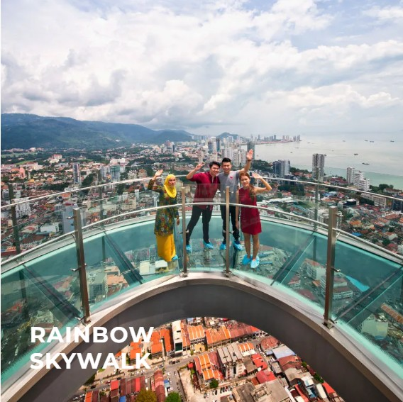
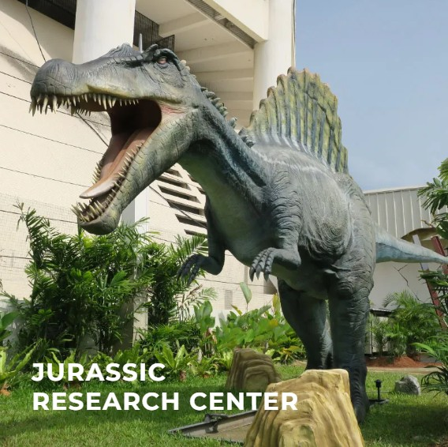

The Top - Komtar
Our Hotel Stay
The Top at Komtar is a popular tourist attraction in George Town, Penang, located in the tallest building in the state. It offers panoramic city views, exciting rides, and interactive exhibits, making it a must-visit destination for visitors to Penang.
Customer Satisfication Rate :
85%
Reservation Progress Bar :
Location
Gallery
Contact Us

Rainbow Skywalk

Jurrasic Research Center
© 2026 My Travels. All rights reserved.